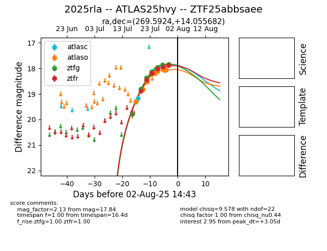

Target 2025rla at 2025-08-02 14:43, see:
FINK: fink-portal.org/2025rla
Lasair: lasair-ztf.lsst.ac.uk/objects/2025rla
ALeRCE: alerce.online/object/2025rla
TNS: wis-tns.org/object/2025rla
YSE: ziggy.ucolick.org/yse/transient_detail/2025rla
alt names
ZTF25abbsaee (ztf,fink)
2025rla (tns,yse)
ATLAS25hvy (atlas)
coordinates:
equatorial (ra, dec) = (269.5924,+14.05568)
galactic (l, b) = (39.8546,+17.99122)
photometry
last atlasc=18.45, atlaso=18.06, ztfg=17.84, ztfr=17.89
4 atlasc, 9 atlaso, 7 ztfg, 6 ztfr detections
